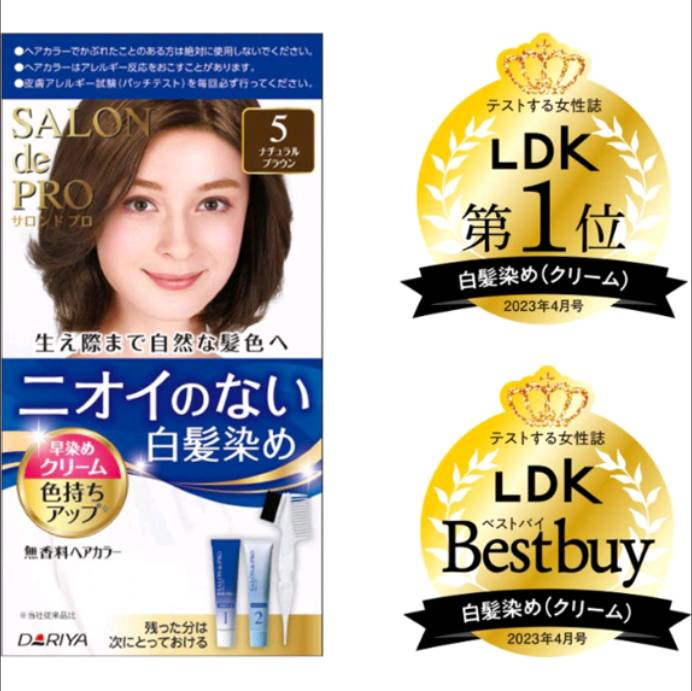

豪拜兒|白髮救星，DARIYA塔莉雅白髮專用染髮劑推薦 不傷髮

今天要與大家分享的是一款染髮劑，DARIYA塔莉雅的沙龍級白髮專用快速染髮霜。DARIYA塔莉雅的染髮霜添加了植物性成分，使染髮過程更加溫和，同時也能保護頭皮和頭髮。染後無異味殘留，頭髮質感柔順亮麗。這是小編長期以來一直回購的產品，特別推薦它的原因是染髮後完全沒有異味殘留，同時頭髮質感也變得非常柔順。
在分享這款產品之前，小編想先針對白頭髮、染髮劑以及染髮的利與弊做一些說明。讓大家可以針對自身的狀況評估是否需要染髮。
為什麼有白頭髮？
白頭髮是一種自然的現象，隨著年齡增長，髮色會逐漸變白。許多人選擇染髮來遮蓋白髮，讓自己看起來年輕有活力。然而，染髮劑中含有化學成分，可能對頭皮和頭髮造成一定程度的傷害。因此，在決定是否染髮之前，我們應該慎重考慮這些因素，並且根據自己的健康狀況做出選擇。
白頭髮的出現可能是多種因素的結果，包括遺傳、氧化壓力、壓力、營養、健康狀況等。雖然白頭髮是一種自然現象，但一些健康問題可能也會導致白頭髮的出現。
- 遺傳因素：白頭髮的出現可能是由於遺傳因素引起的。如果你的父母或祖父母在年輕時就開始出現白頭髮，那麼你可能也會有相似的情況。
- 氧化壓力：氧化壓力是指自由基和氧化物質對身體組織和細胞的損害。過度的氧化壓力可能會損害毛囊中的黑色素細胞，從而導致白頭髮的出現。
- 慢性壓力：長期的精神壓力或情緒壓力可能會影響身體的生理過程，包括對頭髮色素的生產和分泌，從而導致白頭髮的出現。
- 營養不良：某些營養素（如維生素B12、銅、亞鐵等）的缺乏可能會影響頭髮的健康，導致白頭髮的出現。
- 疾病或醫療條件：某些疾病或醫療條件（如甲狀腺疾病、維生素B12缺乏、色素沉著病等）可能會影響頭髮的色素生產，導致白頭髮的出現。
染髮對人體也害嗎？
染頭髮是一種常見的美容行為，其機制是通過化學染料將頭髮的色素改變為所需的顏色。這些化學染料通常包含氧化劑和顏料，可以與頭髮的天然色素反應，從而改變頭髮的顏色。
雖然染頭髮在美容上能夠帶來顯著的效果，但染髮過程中使用的化學物質可能對人體有一定的影響，主要包括以下幾點：
- 皮膚過敏反應：染髮劑中的某些成分可能會引起皮膚過敏反應，包括頭皮紅腫、瘙癢、灼熱感等症狀。這些過敏反應可能對染髮者造成不適和不適。
- 毒性和致癌風險：染髮劑中的某些成分可能具有毒性，長期接觸或大量使用可能對健康造成危害。染髮劑中含有的一些化學物質被認為與癌症風險增加有關，但具體風險取決於使用方法、頻率和暴露程度。
- 頭髮損傷：染髮劑中的化學成分可能對頭髮結構造成損傷，使頭髮變得乾燥、脆弱和易斷。過度染髮可能導致頭髮質量下降，甚至造成永久性損傷。
染髮過程中使用的化學染料可能對健康造成一定程度的風險，特別是對於容易引起過敏的人群。因此，在染髮之前，最好先做一個皮膚敏感測試，並且盡量選擇無氨或低氨染髮劑，減少對頭髮和健康的潛在影響。另外，適量使用和避免過度染髮也是保護頭髮和健康的重要方法。
染髮劑中有害的成分是什麼？
- 氨：氨是一種常見的染髮劑成分，用於打開頭髮鱗片，使染料滲透到髮絲內部。然而，氨可能會導致頭皮過敏反應，引起紅腫、瘙癢和灼熱感等不適症狀。
- 過氧化氫：過氧化氫是染髮劑中的氧化劑，用於氧化染料，從而改變頭髮的顏色。然而，過氧化氫具有刺激性，可能導致頭皮灼傷和過敏反應。
- 對苯二胺（PPD）：PPD是一種常見的染髮劑顏料，用於提供持久的染色效果。然而，PPD可能對某些人造成皮膚過敏反應，尤其是在長期或大量接觸下。
- 苯胺：苯胺是一種染髮劑的色素成分，具有顏色豐富和持久性的特性。但苯胺可能對皮膚和呼吸系統造成刺激，並且被認為具有潛在的致癌風險。
- 二乙醇胺（DEA）：DEA是一種常見的調理劑，用於調整染髮劑的pH值。然而，DEA可能會與其他化學物質反應，產生致癌物質的風險。
這些成分可能會因染髮劑的配方和濃度不同而有所差異，並且對於每個人的敏感性也可能有所不同。因此，染髮前最好先做一個皮膚敏感測試，並且選擇無氨或低氨染髮劑，以減少對皮膚和健康的潛在風險。
既然染髮劑對人體有害, 為什麼人們還是選擇染髮呢？
儘管染髮可能對健康有一定的風險，但許多人仍然認為這些風險是可以接受的，並且願意接受染髮以獲得他們想要的外觀效果。因此，染髮仍然是一個廣受歡迎的美容選擇。
- 美觀和自信感：改變頭髮顏色可以提升外觀美感，使人感到更自信和吸引人。染髮可以讓人看起來更年輕、更時尚，並且有助於塑造個人形象和風格。
- 遮蓋灰白頭髮：灰白頭髮是年齡增長的自然現象，但對一些人來說，它可能會導致自信心下降或顯得老氣。染髮可以有效地遮蓋灰白頭髮，讓人看起來更年輕。
- 社會壓力和期望：在某些文化中，年輕外觀被視為重要的社會價值，染髮可能被視為一種保持年輕外觀和與社會期望相符的方式。
- 自我表達和個性塑造：染髮可以成為一種自我表達和展示個性的方式。通過選擇不同的顏色和風格，人們可以表達自己的獨特風格和品味。
- 社交和職場需求：在某些職業或社交場合中，外觀可能被視為成功的關鍵因素之一。染髮可以幫助人們在職場上或社交場合中更好地融入和表現自己。
推薦
DARIYA塔莉雅沙龍級白髮專用快速染髮霜
誠如前文所提到的，DARIYA塔莉雅的染髮霜添加了植物性成分，使染髮過程更加溫和，同時也能保護頭皮和頭髮。染後無異味殘留，頭髮質感柔順亮麗。
小編深受少年白困擾，也曾經因染髮過敏就醫，對於染髮後揮之不去的味道更是感到頭疼。幾年前發現DARIYA塔莉雅的染髮霜後便長期購入。此賣家提供了豐富的色號選擇，個人覺得相當不錯，對於不想髮色太過淺色亮眼的買家，建議選擇4到6號之間的顏色。此外，該賣場還有一款塔莉雅山茶花護髮精華液，個人覺得非常好用且味道好聞，但在市面上卻很難找到。如果該賣家有進貨，建議可以立即購買，以免錯失機會。如果您對商品感興趣，可以直接點擊連結購買。
購買連結：點我購買
產品特色：
- 植物性成分無臭味：採用植物性成分，無臭味，讓染髮過程更加舒適和安心。
- 遮蓋白髮：特殊配方能夠有效遮蓋白髮。
- 便利且節約：按壓一下即可直接染色，無需額外調和，方便快捷，並可分次使用，減少浪費。
- 亮澤保濕成分：添加了植物性亮澤成分如椿油、薔薇果油，以及保濕修護成分如珍珠萃取、山楂子精華，賦予頭髮亮麗光澤，同時減低對髮絲的傷害，保持頭髮強健滑順。
注意事項：
- 除非必要，應盡量避免染髮。
- 染髮後應使用大量水沖洗頭皮。
- 染髮時應戴手套。
- 使用前請詳閱說明書。
- 不可同時混合使用不同品牌的染髮劑，以免造成無法預知的傷害。
- 使用前必須先進行皮膚貼布測試，確保無過敏現象發生。
- 有特殊情況者（如妊娠期、皮膚敏感等）應先諮詢醫生建議後再使用染髮劑。